# Packages for this exercise. If one is missing, remove the # and run this line once:
# install.packages(c("tidyverse", "tidymodels", "rpart.plot"))
library(tidyverse) # data wrangling and plotting (ggplot2 is part of it)
library(tidymodels) # modelling
theme_set(theme_bw()) # white background for every plotExercise 3.1 — Supervised learning
A supervised learning model makes predictions after seeing many examples that come with the correct answer, and discovering the connections in the data that produce those answers. It is like a student preparing for an exam by studying past papers that contain both the questions and the answers: after enough past papers, the student is ready to sit a new one. These systems are “supervised” in the sense that a human gives the system data with the known correct results.
This exercise repeats the pipeline from Day 1, this time stopping after each coding step to understand what is happening.
Download this exercise as an R Markdown notebook (.Rmd): the text and every code cell of the R version, including the code for the plots, with the blanks left for you to fill in. Open it in Positron or RStudio and run it a chunk at a time.
Packages and data
Packages needed for this session:
Load the dataset. data/glucose_study.csv is the dataset for the whole of Day 3. It comes from data/diabetes.csv, the file you met on Day 2: we kept two columns only, age in years and one blood glucose measurement in mg/dL, removed the five impossible glucose readings of 0, and cut what was left down to the first 80 rows, which is small enough to see every point on a plot.
glu <- read_csv("data/glucose_study.csv")
head(glu)#> # A tibble: 6 × 2
#> age glucose
#> <dbl> <dbl>
#> 1 28 194
#> 2 44 129
#> 3 26 132
#> 4 39 184
#> 5 22 108
#> 6 58 117Now visualise the relationship:
ggplot(glu, aes(x = age, y = glucose)) +
geom_point() +
labs(x = "Age (feature)", y = "Glucose (label)")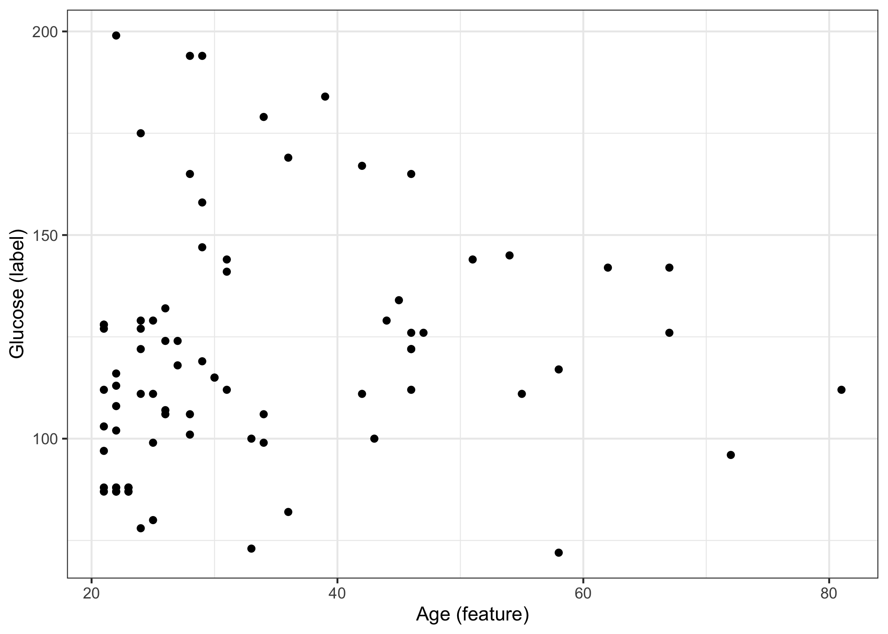
A supervised learning algorithm: linear regression
Suppose we want to predict a person’s glucose level from their age with this dataset. We can fit a learning algorithm to the dataset and create a predictive model. Here the learning algorithm is linear regression. ggplot2 can already fit and draw it, through geom_smooth(), as you did on Day 1:
ggplot(glu, aes(x = age, y = glucose)) +
geom_point() +
labs(x = "Age (feature)", y = "Glucose (label)") +
geom_smooth(method = "lm", se = FALSE)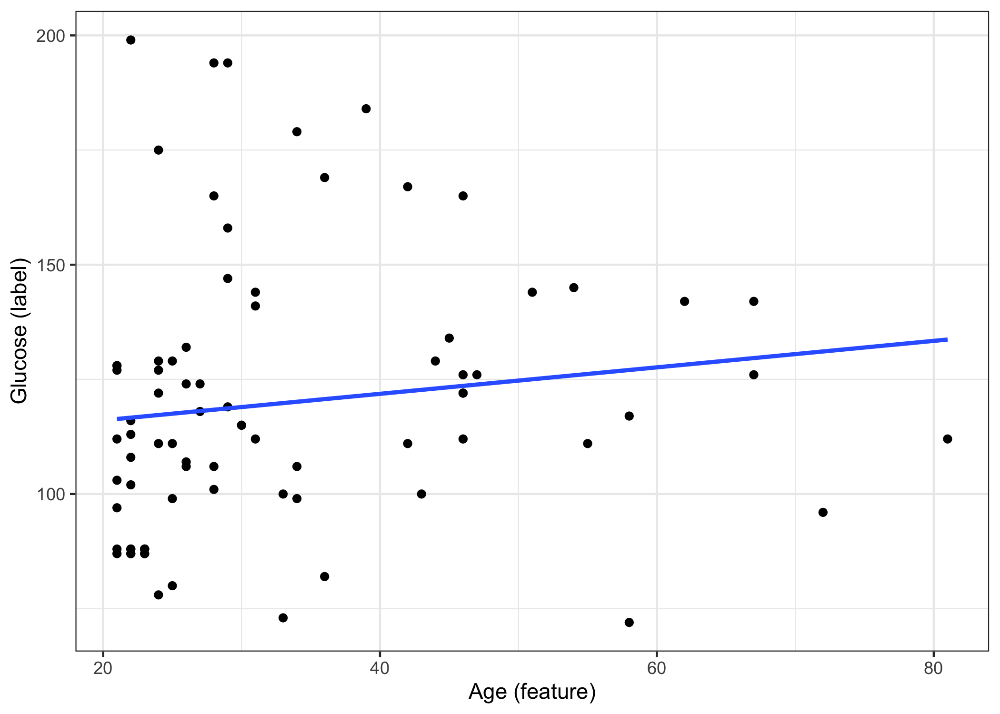
This amounts to using the lm() function to fit the data, as you saw in the Statistics module (statistics recap).
To recap, the linear regression algorithm is as follows. In ML we write the equation as
\[y = \beta_0 + \beta_1 x_1\]
where
- \(y\) is the outcome label: the column to predict (glucose);
- \(\beta_0\) is the intercept of the line, sometimes known as the bias. It is a parameter of the model;
- \(\beta_1\) is the weight of the feature \(x_1\), the same as the slope in the equation of a line. It is a parameter of the model;
- \(x_1\) is the feature: the input column (age).
And how do we find the two parameters? They are the result of fitting the learning algorithm (linear regression) to the data. Once they are fixed we have the predictive model: if a new sample \(x_i\) arrives with its age, we can work out its predicted glucose \(\hat y_i\),
\[\hat y_i = \hat\beta_0 + \hat\beta_1 x_i\]
where the hats mark values that came out of the fit.
As you will see later today, fitting works by finding the \(\beta_0\) and \(\beta_1\) that make the best fit line. That is calculated by optimising a loss (cost) function, through either ordinary least squares (OLS) or gradient descent. Do not worry about this just now!
More specifically, when you use the function linear_reg() below, or the other standard functions that fit a linear model in R or Python, \(\beta_0\) and \(\beta_1\) (up to \(\beta_n\), depending on how many features you include in your model) are calculated using OLS.
lm_model <- linear_reg() |>
set_engine("lm") |> # the lm implementation of linear regression
set_mode("regression")
ls_fit <- lm_model |>
fit(glucose ~ age, data = glu)Let’s look at the learned parameters:
b <- ls_fit$fit$coefficients # intercept first, then the slope
b#> (Intercept) age
#> 110.2979509 0.2886749If we take these coefficients and draw the line ourselves, we obtain the same thing as the geom_smooth() line above.
ggplot(glu, aes(x = age, y = glucose)) +
geom_point() +
labs(x = "Age (feature)", y = "Glucose (label)") +
geom_abline(intercept = b[1], slope = b[2],
colour = "red", linetype = "dashed", linewidth = 1.5)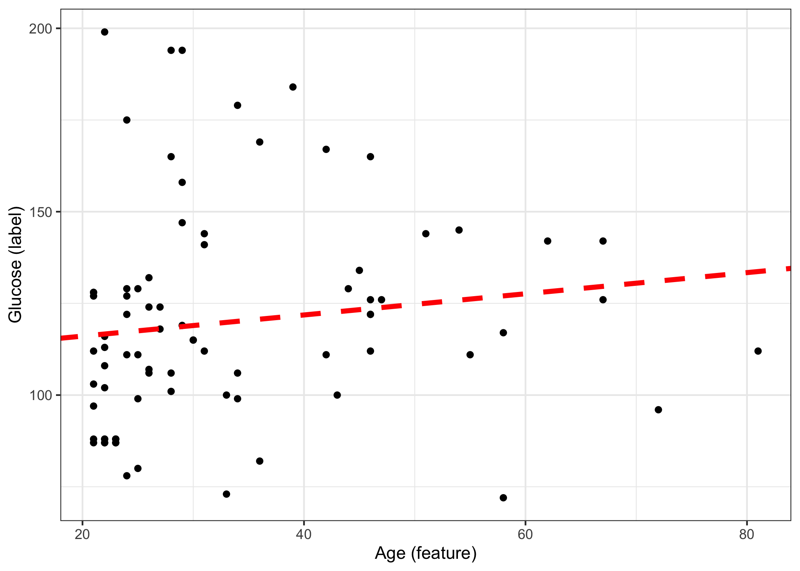
The predictive model, with its fitted parameters, is then
\[\widehat{\text{glucose}} = 110.30 + 0.289 \times \text{age}\]
If a new sample now arrives with \(\text{age} = 45\), what is the predicted glucose? Can you include it in the plot?
age_newsample <- 45
predicted_glucose <- 110.30 + 0.289 * age_newsample
print(predicted_glucose)#> [1] 123.305This is the same as doing:
# predict() wants a data frame, because it normally receives more than one
# sample and more than one feature. Here it has one row and one column.
predict(ls_fit, new_data = data.frame(age = 45))#> # A tibble: 1 × 1
#> .pred
#> <dbl>
#> 1 123.The tibble rounds what it prints. The value is 123.29, a touch below our 123.305, because we typed the two parameters rounded.
ggplot(glu, aes(x = age, y = glucose)) +
geom_point() +
annotate("point", x = age_newsample, y = predicted_glucose,
colour = "grey50", size = 5) +
labs(x = "Age (feature)", y = "Glucose (label)") +
geom_abline(intercept = b[1], slope = b[2],
colour = "red", linetype = "dashed", linewidth = 1.5)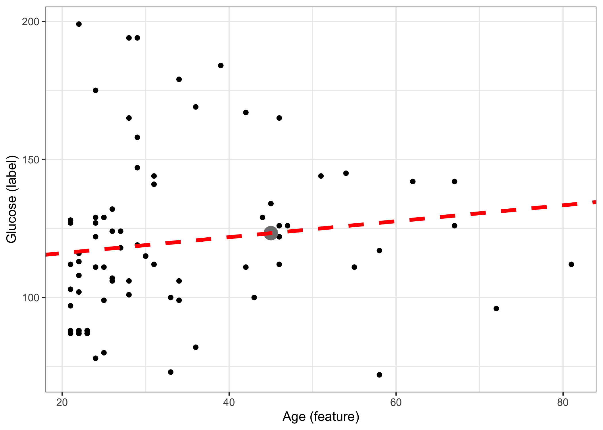
Question! If my new sample has \(\text{age} = 10\), can I still predict glucose, even though nobody in the data used to create the model was 10 years old?
age_newsample <- 10
predicted_glucose <- 110.30 + 0.289 * age_newsample
print(predicted_glucose)#> [1] 113.19ggplot(glu, aes(x = age, y = glucose)) +
geom_point() +
annotate("point", x = age_newsample, y = predicted_glucose,
colour = "grey50", size = 5) +
labs(x = "Age (feature)", y = "Glucose (label)") +
geom_abline(intercept = b[1], slope = b[2],
colour = "red", linetype = "dashed", linewidth = 1.5) +
xlim(0, 100)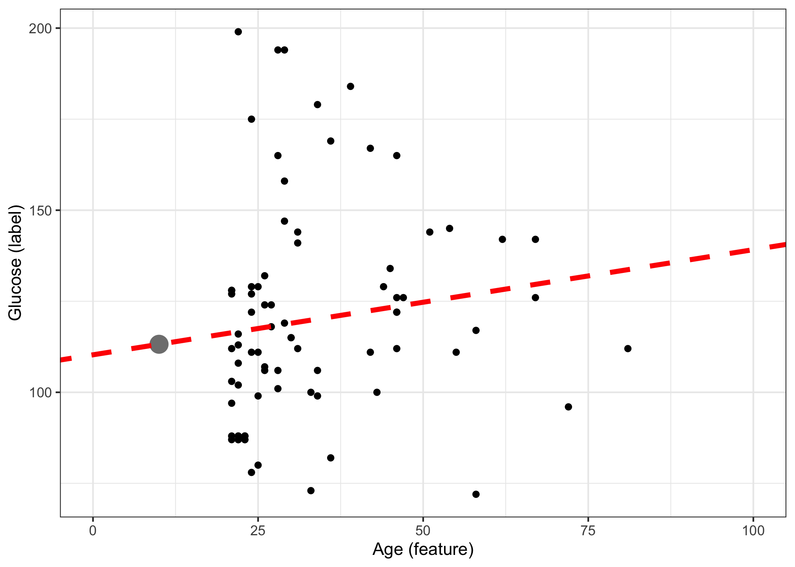
Yes we can! How confident we are about the predicted value is another matter, which we will discuss later on. The model is an infinite line that maps age to glucose. The youngest person in the data is 21, yet we could even give the model a negative age, or a very high one (say 1000), and obtain a predicted glucose. It would make no sense.
Exercise: understand the role of the dataset in predictive modelling
Let’s fit a different learning algorithm, the decision tree, to different numbers of training points. You will learn how decision trees work later in the module. As you have seen in the previous classes, learning algorithms are already coded for you as functions, so you can apply one already.
dt_model <- decision_tree() |>
set_engine("rpart") |> # check out what the rpart package is about
set_mode("regression")
dt_fit <- dt_model |>
fit(glucose ~ age, data = glu)Check what the fitted model consists of, and print the information the model encodes. Open ls_fit too and compare.
# View(dt_fit)
dt_fit$fit#> n= 80
#>
#> node), split, n, deviance, yval
#> * denotes terminal node
#>
#> 1) root 80 69055.200 119.9000
#> 2) age< 26.5 36 22841.890 109.0556
#> 4) age< 23.5 22 14043.090 104.3636 *
#> 5) age>=23.5 14 7553.429 116.4286 *
#> 3) age>=26.5 44 38515.730 128.7727
#> 6) age>=29.5 34 25421.060 124.7059
#> 12) age>=54.5 8 3817.500 114.7500 *
#> 13) age< 54.5 26 20566.620 127.7692
#> 26) age< 33.5 7 3511.429 114.2857 *
#> 27) age>=33.5 19 15313.680 132.7368 *
#> 7) age< 29.5 10 10620.400 142.6000 *Now plot the model to get a better idea of what it is doing. This is the equivalent of printing the intercept and the coefficient of a linear regression.
library(rpart.plot)
rpart.plot(dt_fit$fit, type = 3, fallen.leaves = TRUE,
box.palette = "Blues", shadow.col = "gray", roundint = FALSE)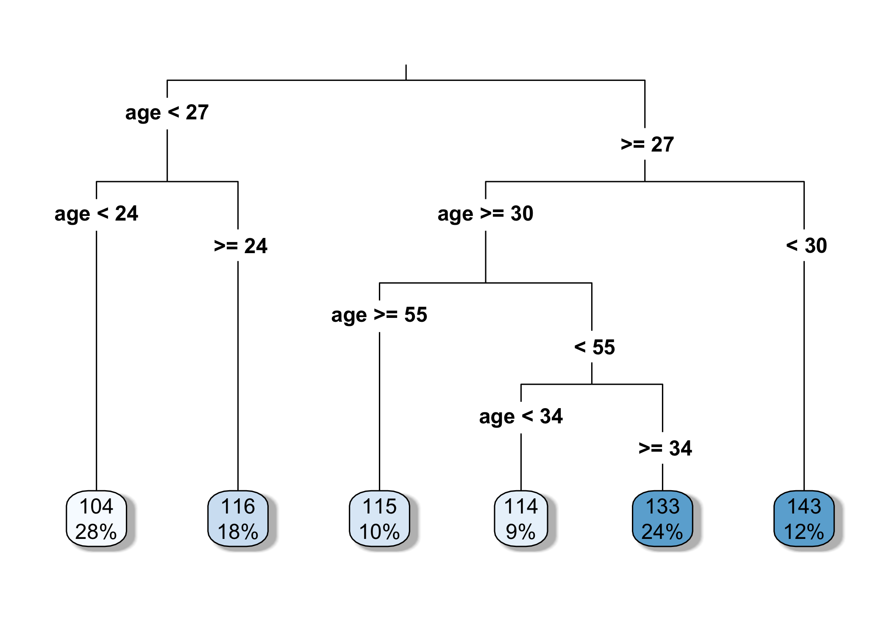
Get the predicted glucose values:
glu$predicted_glucose <- predict(dt_fit, new_data = glu)$.pred
head(glu)#> # A tibble: 6 × 3
#> age glucose predicted_glucose
#> <dbl> <dbl> <dbl>
#> 1 28 194 143.
#> 2 44 129 133.
#> 3 26 132 116.
#> 4 39 184 133.
#> 5 22 108 104.
#> 6 58 117 115.Here we are giving the model the same dataset we fitted the learning algorithm on, as if its rows were new samples whose glucose we want predicted. Do you see how the real value and the predicted one differ? The closer we can get them to each other, the better the model we will have!
ImportantStop here
Make sure you have understood this concept before you go on.
Do these plots help?
ggplot(glu, aes(x = age, y = glucose)) +
geom_point(size = 3, colour = "blue", alpha = 0.7) +
geom_step(aes(y = predicted_glucose), colour = "darkred", linewidth = 1.5) +
labs(x = "Age (years)", y = "Glucose (mg/dL)")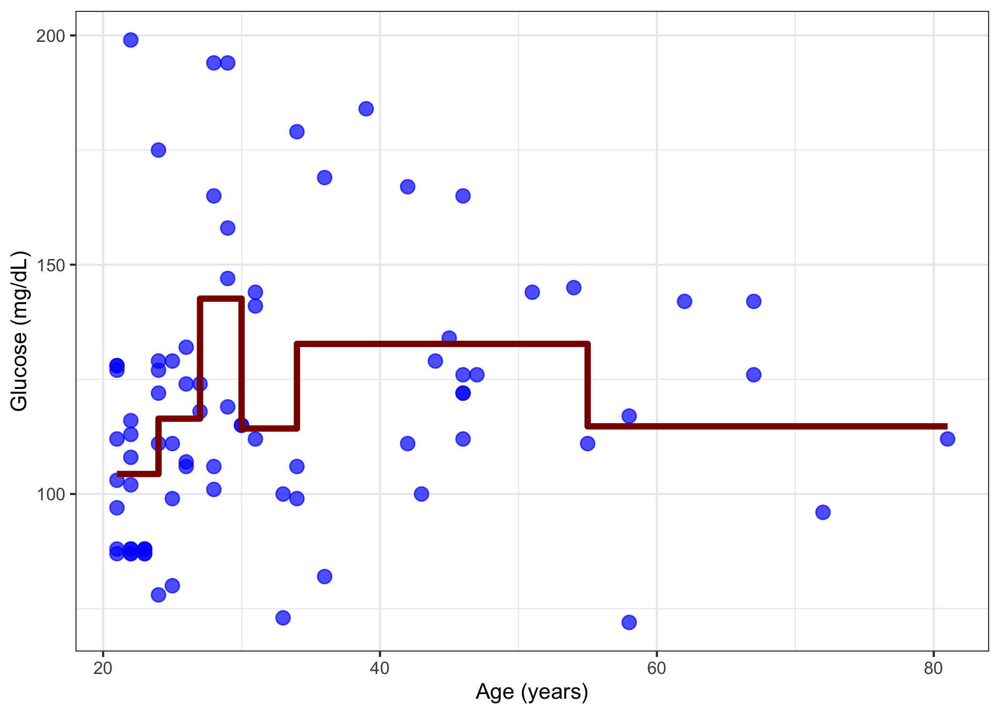
ggplot(glu, aes(x = age, y = glucose)) +
geom_point(size = 3, colour = "blue", alpha = 0.7) +
geom_step(aes(y = predicted_glucose), colour = "darkred", linewidth = 1.5) +
geom_point(aes(y = predicted_glucose), size = 2, colour = "grey", alpha = 0.8) +
labs(x = "Age (years)", y = "Glucose (mg/dL)")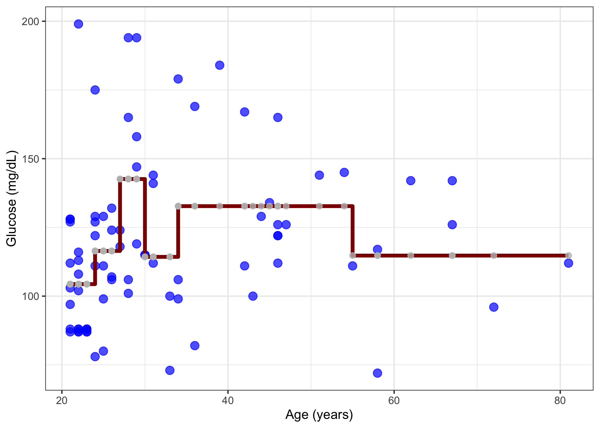
TipDiscuss
Discuss this with your partner and explain it to each other.
Now let’s fit the decision tree algorithm on an even smaller set of points:
glu30 <- glu[1:30, ]
dim(glu30)#> [1] 30 3- What is the model created?
- How does it differ from the previous one?
- Do the same with the linear regression model. What changes?
TipStuck?
Nothing new is needed. dt_model and lm_model are the learning algorithms, and they have not changed. Fit each of them again, and change only the data you fit them on.
ImportantLearning points
- A learning algorithm fitted to a dataset gives a predictive model. For linear regression the model is two numbers: the intercept and the slope.
- A model returns a prediction for any input, including ages far outside the data. Whether that prediction makes sense is for you to judge.
- The predictive model depends on the learning algorithm you chose and on the dataset it was fitted to.
Download this exercise as a Jupyter notebook (.ipynb): the text and every code cell of the Python version, including the code for the plots, with the blanks left for you to fill in. Open it in Jupyter, VS Code or Positron and run it a cell at a time.
Packages and data
Packages needed for this session:
# Packages for this exercise. If one is missing, install it once from a terminal
# (in a Jupyter notebook, type %pip instead of pip):
# pip install pandas numpy matplotlib seaborn scikit-learn
import pandas as pd
import numpy as np
import matplotlib.pyplot as plt
import seaborn as sns
from sklearn.linear_model import LinearRegression
from sklearn.tree import DecisionTreeRegressor, plot_tree, export_text # a new learning algorithmLoad the dataset. data/glucose_study.csv is the dataset for the whole of Day 3. It comes from data/diabetes.csv, the file you met on Day 2: we kept two columns only, age in years and one blood glucose measurement in mg/dL, removed the five impossible glucose readings of 0, and cut what was left down to the first 80 rows, which is small enough to see every point on a plot.
glu = pd.read_csv("data/glucose_study.csv")
glu.head()#> age glucose
#> 0 28 194
#> 1 44 129
#> 2 26 132
#> 3 39 184
#> 4 22 108Now visualise the relationship:
fig, ax = plt.subplots()
ax.scatter(glu["age"], glu["glucose"])
ax.set_xlabel("Age (feature)")
ax.set_ylabel("Glucose (label)")
plt.show()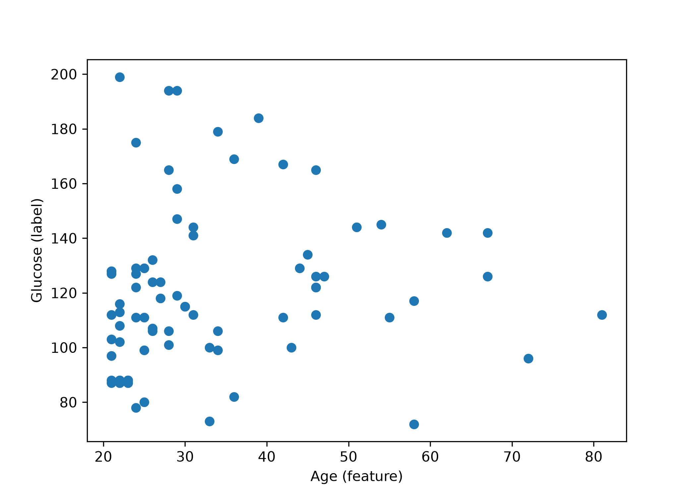
A supervised learning algorithm: linear regression
Suppose we want to predict a person’s glucose level from their age with this dataset. We can fit a learning algorithm to the dataset and create a predictive model. Here the learning algorithm is linear regression. seaborn can already fit and draw it, through regplot(), as you did on Day 1:
fig, ax = plt.subplots()
sns.regplot(data=glu, x="age", y="glucose", ci=None, ax=ax)
ax.set_xlabel("Age (feature)")
ax.set_ylabel("Glucose (label)")
plt.show()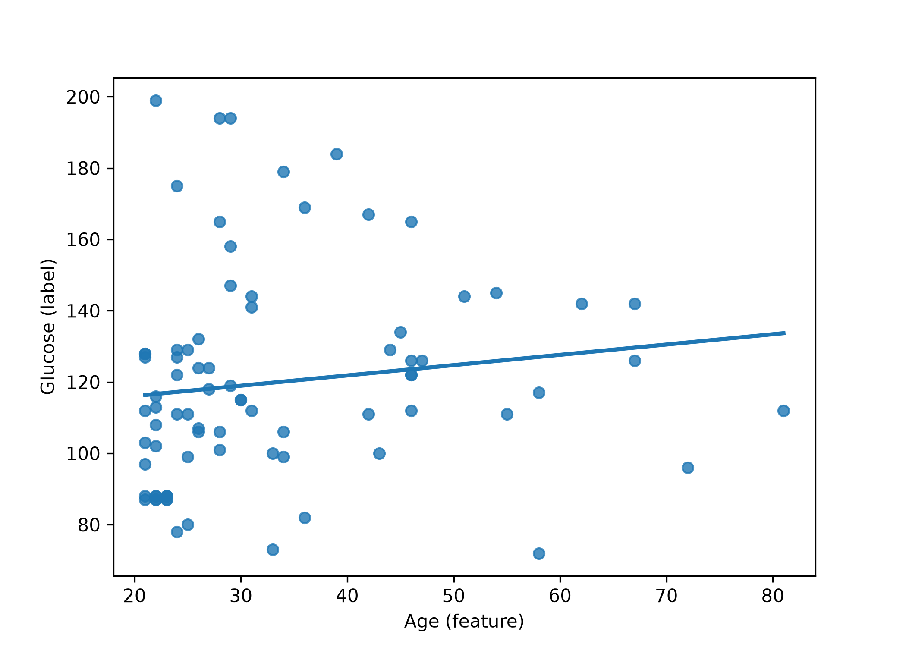
This amounts to using the lm() function to fit the data, as you saw in the Statistics module (statistics recap).
To recap, the linear regression algorithm is as follows. In ML we write the equation as
\[y = \beta_0 + \beta_1 x_1\]
where
- \(y\) is the outcome label: the column to predict (glucose);
- \(\beta_0\) is the intercept of the line, sometimes known as the bias. It is a parameter of the model;
- \(\beta_1\) is the weight of the feature \(x_1\), the same as the slope in the equation of a line. It is a parameter of the model;
- \(x_1\) is the feature: the input column (age).
And how do we find the two parameters? They are the result of fitting the learning algorithm (linear regression) to the data. Once they are fixed we have the predictive model: if a new sample \(x_i\) arrives with its age, we can work out its predicted glucose \(\hat y_i\),
\[\hat y_i = \hat\beta_0 + \hat\beta_1 x_i\]
where the hats mark values that came out of the fit.
As you will see later today, fitting works by finding the \(\beta_0\) and \(\beta_1\) that make the best fit line. That is calculated by optimising a loss (cost) function, through either ordinary least squares (OLS) or gradient descent. Do not worry about this just now!
More specifically, when you use LinearRegression() below, or the other standard functions that fit a linear model in R or Python, \(\beta_0\) and \(\beta_1\) (up to \(\beta_n\), depending on how many features you include in your model) are calculated using OLS.
In scikit-learn the standard steps are:
- Separate the features
Xand the labely. - Create a model object.
- Fit the model to the data using
.fit(). - Use
.predict()to obtain predictions.
# 1. Separate X (the feature) and y (the label)
X = glu[["age"]] # two-dimensional: a data frame with one column
y = glu["glucose"] # one-dimensional: a single column
# 2. Define the model
lin_reg = LinearRegression()
# 3. Fit the model
lin_reg = lin_reg.fit(X, y)Let’s look at the learned parameters:
intercept = lin_reg.intercept_
slope = lin_reg.coef_[0]
print(intercept, slope)#> 110.2979509174209 0.28867490665401274If we take these coefficients and draw the line ourselves, we obtain the same thing as the regplot() line above.
ages = np.array([glu["age"].min(), glu["age"].max()]) # the two ends of the line
fig, ax = plt.subplots()
ax.scatter(glu["age"], glu["glucose"])
ax.plot(ages, intercept + slope * ages, color="red", linestyle="--", linewidth=2)
ax.set_xlabel("Age (feature)")
ax.set_ylabel("Glucose (label)")
plt.show()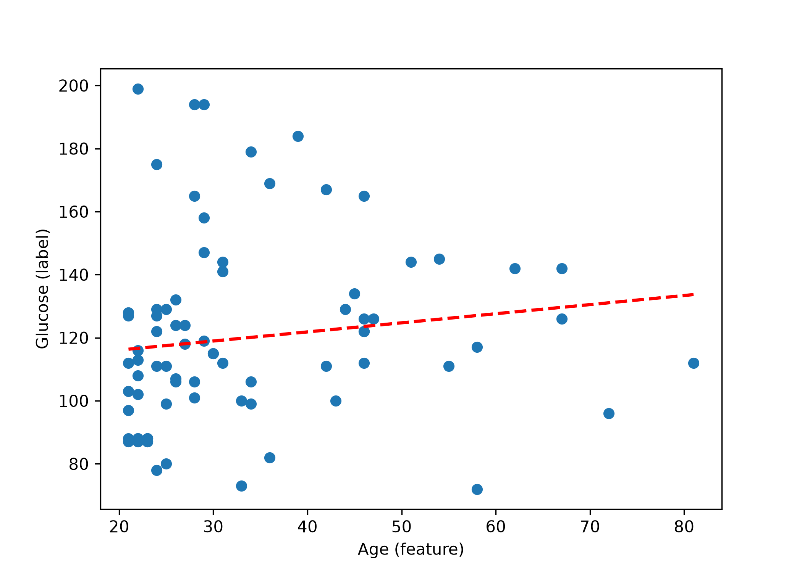
The predictive model, with its fitted parameters, is then
\[\widehat{\text{glucose}} = 110.30 + 0.289 \times \text{age}\]
If a new sample now arrives with \(\text{age} = 45\), what is the predicted glucose? Can you include it in the plot?
age_newsample = 45
predicted_glucose = 110.30 + 0.289 * age_newsample
print(round(predicted_glucose, 3))#> 123.305This is the same as doing:
# predict() wants a data frame, because it normally receives more than one
# sample and more than one feature. Here it has one row and one column.
lin_reg.predict(pd.DataFrame({"age": [45]}))#> array([123.28832172])The value is 123.29, a touch below our 123.305, because we typed the two parameters rounded.
fig, ax = plt.subplots()
ax.scatter(glu["age"], glu["glucose"])
ax.plot(ages, intercept + slope * ages, color="red", linestyle="--", linewidth=2)
ax.scatter(age_newsample, predicted_glucose, color="grey", s=150, zorder=3)
ax.set_xlabel("Age (feature)")
ax.set_ylabel("Glucose (label)")
plt.show()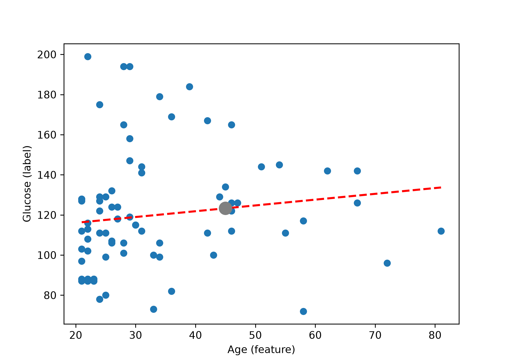
Question! If my new sample has \(\text{age} = 10\), can I still predict glucose, even though nobody in the data used to create the model was 10 years old?
age_newsample = 10
predicted_glucose = 110.30 + 0.289 * age_newsample
print(round(predicted_glucose, 3))#> 113.19ages = np.array([0, 100]) # draw the line well beyond the data
fig, ax = plt.subplots()
ax.scatter(glu["age"], glu["glucose"])
ax.plot(ages, intercept + slope * ages, color="red", linestyle="--", linewidth=2)
ax.scatter(age_newsample, predicted_glucose, color="grey", s=150, zorder=3)
ax.set_xlim(0, 100)#> (0.0, 100.0)ax.set_xlabel("Age (feature)")
ax.set_ylabel("Glucose (label)")
plt.show()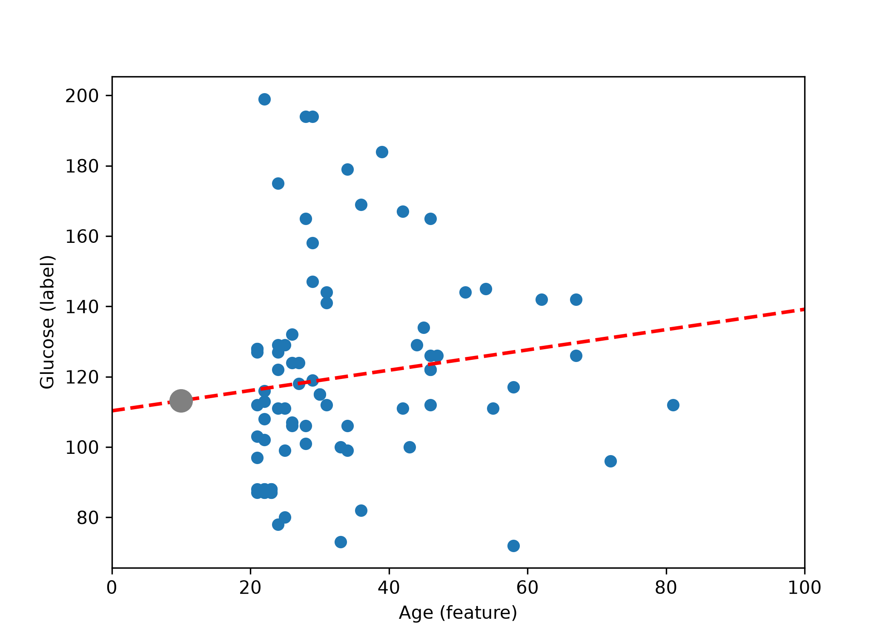
Yes we can! How confident we are about the predicted value is another matter, which we will discuss later on. The model is an infinite line that maps age to glucose. The youngest person in the data is 21, yet we could even give the model a negative age, or a very high one (say 1000), and obtain a predicted glucose. It would make no sense.
Exercise: understand the role of the dataset in predictive modelling
Let’s fit a different learning algorithm, the decision tree, to different numbers of training points. You will learn how decision trees work later in the module. As you have seen in the previous classes, learning algorithms are already coded for you as functions, so you can apply one already.
The scikit-learn function is the decision tree regressor.
# at most 3 questions deep, and at least 5 people in every final group
tree_reg = DecisionTreeRegressor(max_depth=3, min_samples_leaf=5)
tree_reg = tree_reg.fit(X, y)Check what the fitted model consists of, and print the information the model encodes. Compare it with the two numbers that were the whole of lin_reg.
print(export_text(tree_reg, feature_names=["age"]))#> |--- age <= 26.50
#> | |--- age <= 23.50
#> | | |--- age <= 22.50
#> | | | |--- value: [109.29]
#> | | |--- age > 22.50
#> | | | |--- value: [87.60]
#> | |--- age > 23.50
#> | | |--- age <= 24.50
#> | | | |--- value: [123.67]
#> | | |--- age > 24.50
#> | | | |--- value: [111.00]
#> |--- age > 26.50
#> | |--- age <= 29.50
#> | | |--- value: [142.60]
#> | |--- age > 29.50
#> | | |--- age <= 54.50
#> | | | |--- value: [127.77]
#> | | |--- age > 54.50
#> | | | |--- value: [114.75]Now plot the model to get a better idea of what it is doing. This is the equivalent of printing the intercept and the coefficient of a linear regression.
fig, ax = plt.subplots(figsize=(10, 6))
plot_tree(tree_reg, feature_names=["age"], filled=True, rounded=True,
fontsize=8, ax=ax)
plt.tight_layout()
plt.show()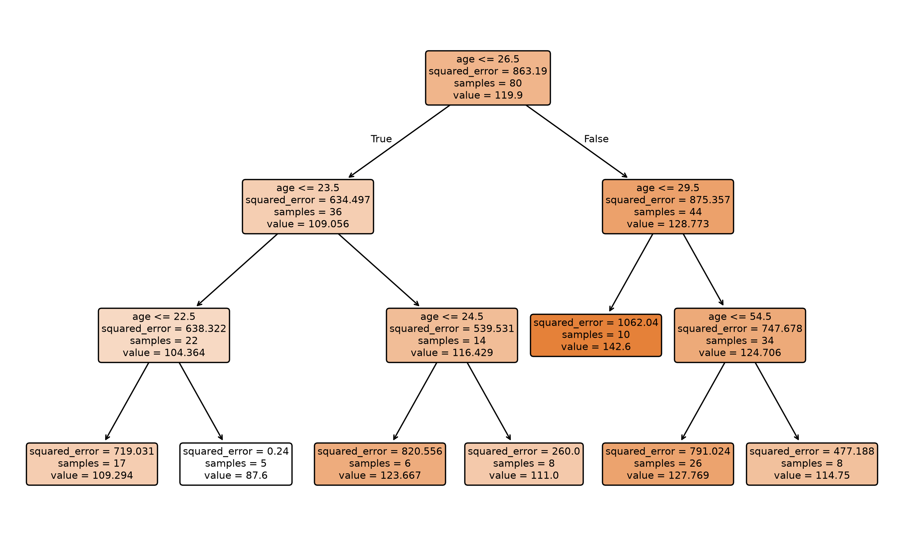
Get the predicted glucose values:
glu["predicted_glucose"] = tree_reg.predict(X)
glu.head()#> age glucose predicted_glucose
#> 0 28 194 142.600000
#> 1 44 129 127.769231
#> 2 26 132 111.000000
#> 3 39 184 127.769231
#> 4 22 108 109.294118Here we are giving the model the same dataset we fitted the learning algorithm on, as if its rows were new samples whose glucose we want predicted. Do you see how the real value and the predicted one differ? The closer we can get them to each other, the better the model we will have!
ImportantStop here
Make sure you have understood this concept before you go on.
Do these plots help?
ordered = glu.sort_values("age") # a step line has to be drawn from left to right
fig, ax = plt.subplots()
ax.scatter(glu["age"], glu["glucose"], s=60, color="blue", alpha=0.7)
ax.step(ordered["age"], ordered["predicted_glucose"], where="post",
color="darkred", linewidth=2)
ax.set_xlabel("Age (years)")
ax.set_ylabel("Glucose (mg/dL)")
plt.show()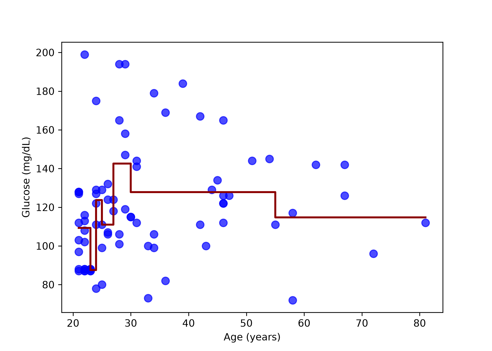
fig, ax = plt.subplots()
ax.scatter(glu["age"], glu["glucose"], s=60, color="blue", alpha=0.7)
ax.step(ordered["age"], ordered["predicted_glucose"], where="post",
color="darkred", linewidth=2)
ax.scatter(glu["age"], glu["predicted_glucose"], s=30, color="grey", alpha=0.8, zorder=3)
ax.set_xlabel("Age (years)")
ax.set_ylabel("Glucose (mg/dL)")
plt.show()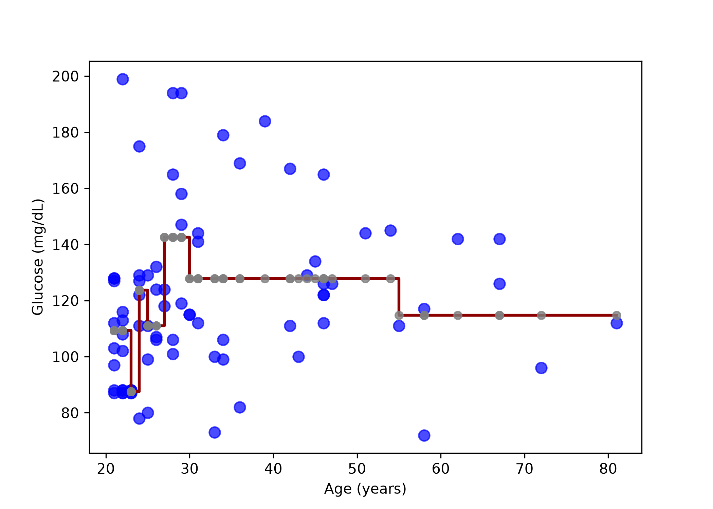
TipDiscuss
Discuss this with your partner and explain it to each other.
Now let’s fit the decision tree algorithm on an even smaller set of points:
glu30 = glu.iloc[:30]
glu30.shape#> (30, 3)- What is the model created?
- How does it differ from the previous one?
- Do the same with the linear regression model. What changes?
TipStuck?
Nothing new is needed. DecisionTreeRegressor and LinearRegression are the learning algorithms, and they have not changed. Fit each of them again, and change only the X and y you fit them on.
ImportantLearning points
- A learning algorithm fitted to a dataset gives a predictive model. For linear regression the model is two numbers: the intercept and the slope.
- A model returns a prediction for any input, including ages far outside the data. Whether that prediction makes sense is for you to judge.
- The predictive model depends on the learning algorithm you chose and on the dataset it was fitted to.
Stretch
NoteStretch — a different feature
Go back to data/diabetes.csv and repeat this page with mass (body mass index) as the feature instead of age, on the same 80 people: drop the rows with a glucose of 0 and keep the first 80. What are the two parameters now? Does the line follow the points any better than it did for age? Look at the smallest values of mass before you trust the answer.